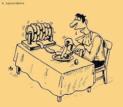
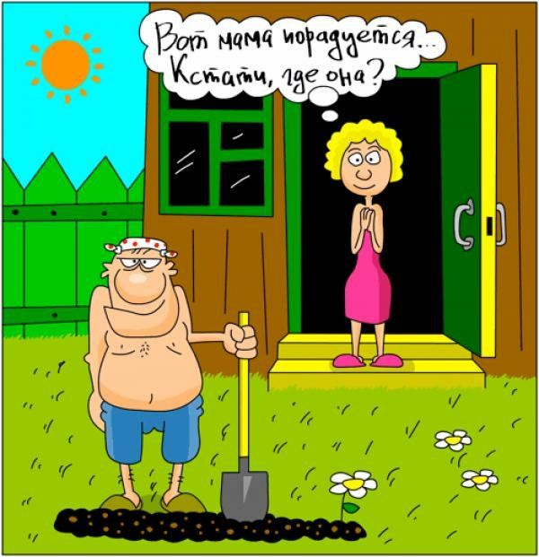
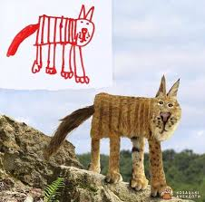

Такий твір сатиричного та політичного спрямування, як різновид гумористичної літератури, тобто анекдот, українська фольклористика розцінює як жанр усної народної творчості. Анекдот — це жанр оповідного фольклору. Це коротка жартівлива оповідка про якийсь незвичайний життєвий випадок чи ситуацію з несподіваним і дотепним закінченням.[3][8][9] Стосовно історичного джерелознавства, то анекдот тут трактується як різновид усних джерел історичної інформації, так само як із переказами, прислів'ями, думами, піснями, крилатими виразами та ін. Як жанр фольклору анекдот близький до народної новели (Дж. Бокаччо, А. Чехов, Остап Вишня).
|  | Купив курс, по якому англійську мові вивчають уві сні. Але дружина вигнала викладачку із нашого ліжка. |
 | Кажуть, що у геніїв в будинку має бути безлад. Дивлюсь на свою дитину і гордість розпирає! Енштейна виховую!.. |
Допоможіть знайти чоловіка! Дуже заляканий і збентежений… Волосся сиве, одягнений в сині труси, сірий пуховик і чорну шкарпетку… Коротше, в чому встиг, курvа, в тому і втік! |
–Господи, дай мені сили зробити уроки з дитиною! І при цьому залишитися люблячою матусею, культурною жінкою і адекватною сусідкою. |
 | Отак після 25 років шлюбу намагаєшся організувати романтику, запалиш свічки… Прийде Він і питає: – хто вмер? |